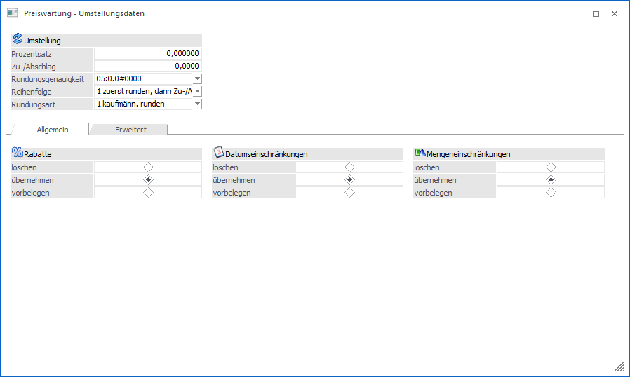
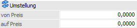
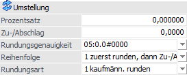
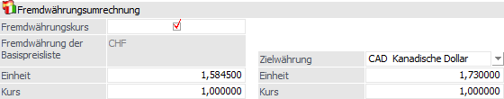
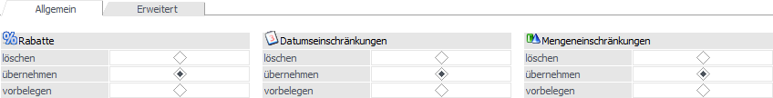
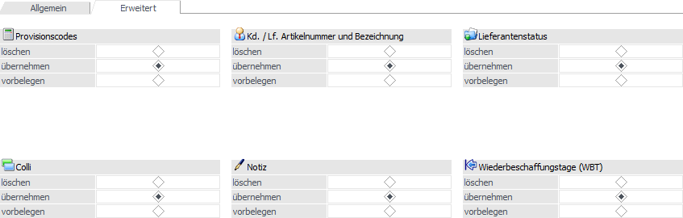
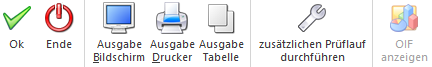
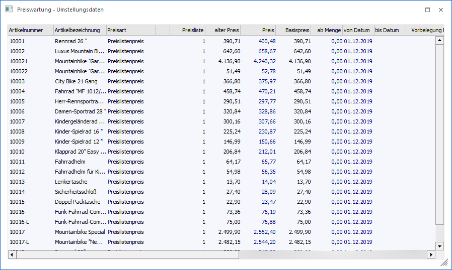
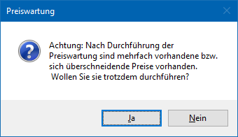

Das Fenster "Preiswartung - Umstellungsdaten" wird im Zuge der Preiswartung geöffnet, wenn Preise geändert oder neu angelegt werden sollen.
Innerhalb des Fensters können die Preisdaten als solches definiert werden, d.h. um wieviel Prozent soll sich der Preis verändern oder von was auf was soll umgestellt werden. Zusätzlich können viele weitere Preisbestandteile (z.B. "Rabatt", "Datumseinschränkungen", "Mengeneinschränkungen" und "Colli") definiert werden.
Hinweis
Die Art der Preisumstellung wird in der Preiswartung unter "Umstellung" definiert.

Umstellung (bei "Direkte Umstellung")

Ø von Preis
Hier wird der alte Preis eingegeben.
Achtung
Es werden nur jene Preise geändert / neu angelegt, die genau dem Wert "von Preis" entsprechen.
Ø auf Preis
Hier wird der neue Preis eingegeben.
Umstellung (bei "Prozentuelle Umstellung")

Ø Prozentsatz
Eingabe des Wertes, um den der neue Preis geändert werden soll. Wird der Wert positiv eingegeben, wird der Preis erhöht, wird der Wert negativ eingegeben, wird der Preis reduziert.
Ø Zu-/Abschlag
Eingabe eines Wertes, um den der Zielpreis zusätzlich verändert werden soll.
Ø Runden
Hier gibt es drei Einstellungsmöglichkeiten:
ü Rundungsgenauigkeit (auf welche
Stelle soll gerundet werden)
Bei der prozentuellen Preisumstellung wird es
häufig nötig sein, die umgestellten Preise auf eine Position zu runden. Aus der
Auswahlliste kann hierfür eingestellt werden, auf wie viele Nachkommastellen die
neuen Preise gerundet werden sollen.
ü Reihenfolge (für die
Berechnung)
Es kann gewählt werden, ob der Zielpreis zuerst gerundet und dann
der Zu-/Abschlag berücksichtigt werden soll oder umgekehrt.
ü Rundungsart
Hier kann
entschieden werden, wie die Rundung erfolgen soll. Dabei gibt es die Option "1 -
kaufmännisch runden", "2 - immer aufrunden" und "3 - immer abrunden".
Fremdwährung

Wird als Basis- oder Zielpreis eine Preisliste mit Fremdwährung ausgewählt, so kann die Fremdwährungsumrechnung definiert werden.
Ø Fremdwährungskurs
Nach Aktivieren der Checkbox "Fremdwährungskurs" besteht die Möglichkeit, den Umrechnungsfaktor für die neuen Preise aus dem Fremdwährungskurs der Basispreise und einer ausgewählten Zielpreisliste zu errechnen. Für beide Preislisten kann der Kurs manuell korrigiert werden (sofern beide Preislisten als Fremdwährungspreislisten definiert wurden). Natürlich besteht auch hier die Möglichkeit zu runden und einen fixen Betrag zu- oder abzuschlagen.
Register "Allgemein" / Register "Erweitert"


Mit Hilfe dieser Register können diverse weitere Preisbestandteile angepasst werden. Pro Objekt gibt es dabei in der Regel folgende Möglichkeiten, wobei die Objekte selber zwischen Einkauf und Verkauf zum Teil abweichend sind:
ü löschen
Das Feld wird gelöscht,
d.h. geleert.
ü übernehmen / behalten
Abhängig
vom Basispreis wird "übernehmen" oder "behalten" angeboten. Bei "übernehmen"
wird das Feld wird aus dem Basispreis übernommen. Bei "behalten" bleibt der
Eintrag aus dem Zielpreis erhalten.
ü Vorbelegen
Das Feld kann
vorbelegt werden. Hierfür werden nachfolgend Eingabefelder angeboten.
Buttons

Ø Ok
Durch Anwahl des Buttons "Ok" bzw. der Taste F5 werden die Preisänderungen bzw. Preisneuanlagen durchgeführt.
Ø Ende
Durch Anwahl des Buttons "Ende" bzw. der Taste ESC wird das Fenster geschlossen und keine Preiswartung durchgeführt.
Ø Ausgabe Bildschirm
Mit Hilfe des Buttons "Ausgabe Bildschirm" wird die Liste der neu anzulegenden / zu wartenden Preise am Bildschirm ausgegeben.
Ø Ausgabe Drucker
Durch Anwahl des Buttons "Ausgabe Drucker" wird die Liste der neu anzulegenden / zu wartenden Preise am Drucker ausgegeben.
Ø Ausgabe Tabelle
Bei Anwahl des Buttons "Ausgabe Tabelle" werden die neu anzulegenden / zu wartenden Preise in Tabellenform ausgegeben, wobei Elemente wie "Preis", "ab Menge", "Colli" usw. manuell angepasst werden können.

Hinweis
Die Preisänderungen bzw. Preisneuanlagen werden durch Anwahl des Buttons "Ok" bzw. der Taste F5 durchgeführt. Sollte dieses Fenster hingegen ohne Speichern geschlossen werden, so werden die individuellen Eingaben verworfen.
Ø zusätzlichen Prüflauf durchführen
Bei Aktivierung dieses Buttons wird vor der Neuanlage von Preislisten geprüft, ob bereits entsprechende Preislisteneinträge vorhanden sind.

Wird diese Meldung mit "Ja" bestätigt, so sind anschließend Mehrfachpreise vorhanden. Dies kann dazu führen, dass z.B. in der Belegerfassung nicht der richtige Preis gefunden wird.
Ø OIF anzeigen
Mit Hilfe dieses Buttons kann der OIF-Bereich im rechten Bereich des Fensters aktiviert bzw. deaktiviert werden, wobei eine Aktivierung nur bei "Ausgabe Tabelle" möglich ist.